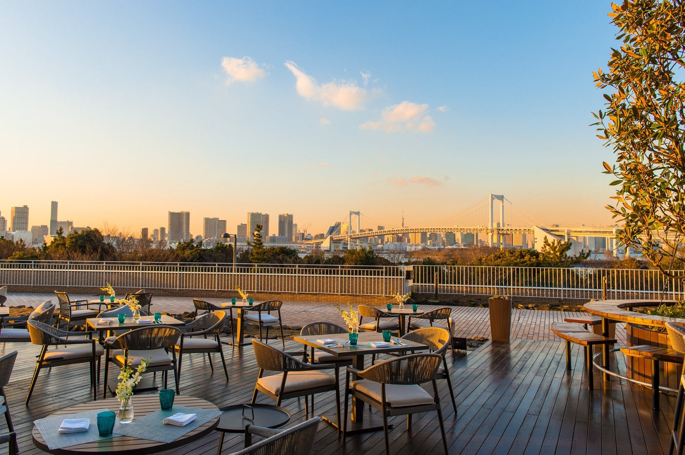
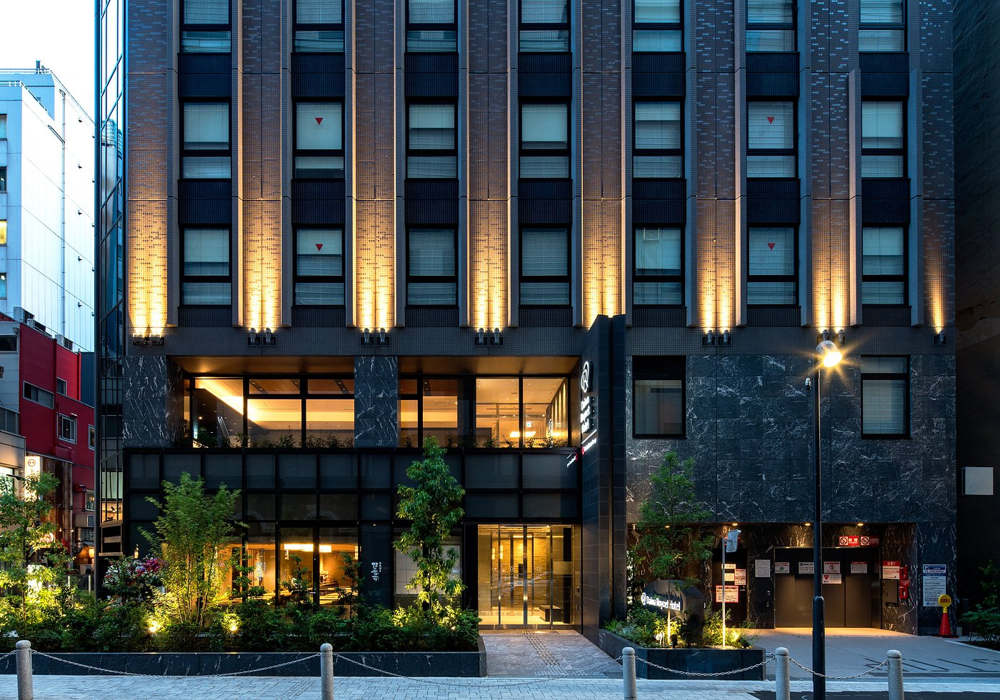

Hilton Tokyo Odaiba Hotel
⭐️⭐️⭐️⭐️⭐️
Plassert med en 8 km avstand fra Tokyo Tower og sentrum finner du Hilton Tokyo Odaiba Hotell. Hotellet tilbyr gratis high-speed wifi, basseng, bar, treningssenter og alt som hører til i et hotell. Hotellet har en sentral beliggenhet og tilbyr også transport til/fra flyplassen i Tokyo.
Bestill nå for 3000kr natta pr voksen!

Daiwa Roynet Hotel Shimbashi
⭐️⭐️⭐️⭐️
Hvis du leter etter ett mer rimeligere hotell vil vi anbefale Daiwa Roynet! For 600 kr natta pr. voksen, får du en koselig hotell-opplevelse! Hotellet har en sentral beliggenhet og passer perfekt for deg som evt reiser med barn. Hotellet tilbyr et flott boblebad, resturang og high-speed wifi!
Bestill nå!